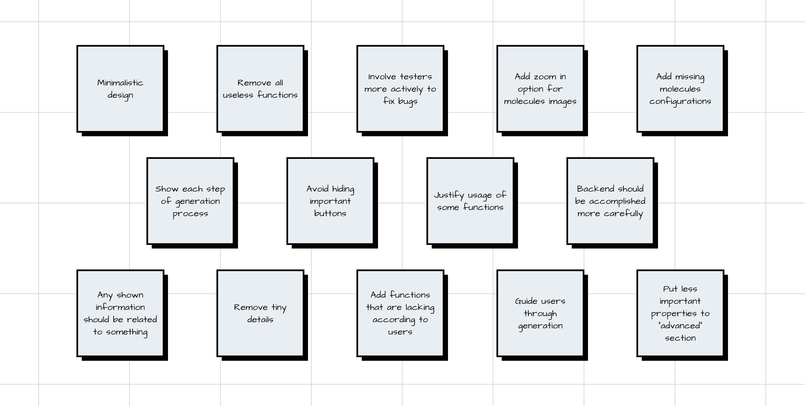

"I need to generate an experiment from the existing one, but there is no such button." — Alexander M (Principal Scientist).
Ideation üí°
how might we…?
To encourage brainstorming and a change of perspective about the project, we tried rephrasing the problem statement, using a question by adding “How might we” at the beginning. From our research, we gained insights to create a Point-of-View from a more in-depth understanding of users, their needs and the most essential facts about them.

solutions
We provided a broad with enough scope to start thinking about solutions that go beyond the status quo. The team participated in a brainstorming session to answer the proposed question. We included each member's ideas about features of the future app so that everyone could vote for the most viable ones.
